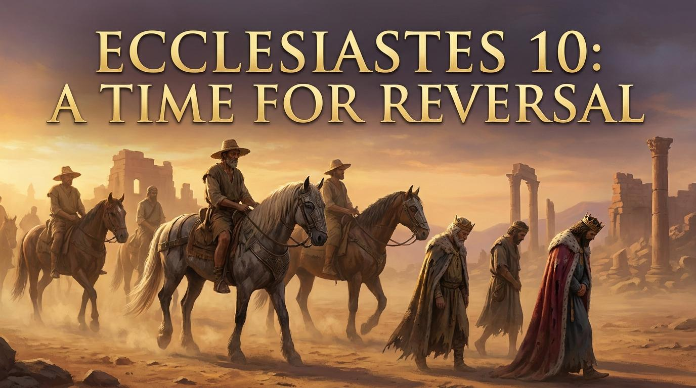

親愛的弟兄姊妹，今天我們要透過傳道書第十章來探討一個非常真實的課題。我們生活在一個充滿變數、甚至經常失序的世界裡。
我們常常覺得自己很努力，卻被一些微小的事物搞砸。傳道者提醒我們：「死蒼蠅使做香的膏油發出臭氣；這樣，一點愚昧也能敗壞智慧和尊榮。」

全能的上帝，祢是萬有智慧的源頭。在這個充滿變數與失序的世界中，求祢賜給我們一顆清明的心，保守我們的生命不被微小的愚昧所敗壞。求祢的聖靈親自指教我們，使我們懂得在日常的挑戰中磨亮智慧的斧頭，用柔和面對衝突，用敬畏行事為人。願我們手所做的工蒙祢堅立，並在凡事上榮耀祢的名。奉主耶穌基督的聖名祈求，阿們。
關鍵問題：為什麼「一點愚昧」就能敗壞一生的智慧與尊榮？
正如香膏的製作需要長時間的提煉與昂貴的香料，但一隻微小的死蒼蠅掉進去腐爛，整瓶香膏就報廢了。智慧與好名聲需要長年累月的建立，但一個瞬間的情緒失控、一個隱藏的小罪、一次道德的妥協，就能將一生的努力摧毀殆盡。
親愛的弟兄姊妹，今天我們要透過傳道書第十章來探討一個非常真實的課題。我們生活在一個充滿變數、甚至經常失序的世界裡。
我們常常覺得自己很努力，卻被一些微小的事物搞砸。傳道者提醒我們：「死蒼蠅使做香的膏油發出臭氣；這樣，一點愚昧也能敗壞智慧和尊榮。」
「愚蠢是一種道德上的缺陷，而不是理智上的缺陷。」
— 潘霍華 (Dietrich Bonhoeffer)《獄中書簡》